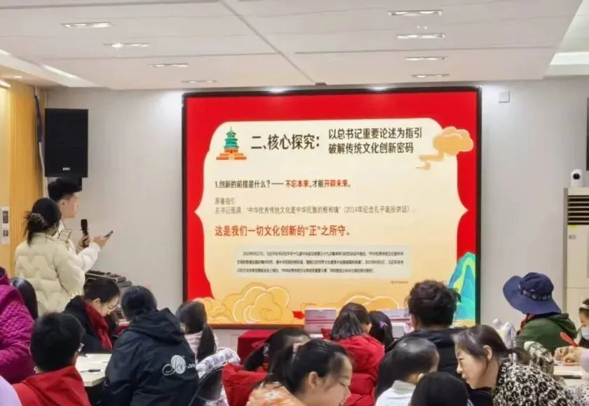
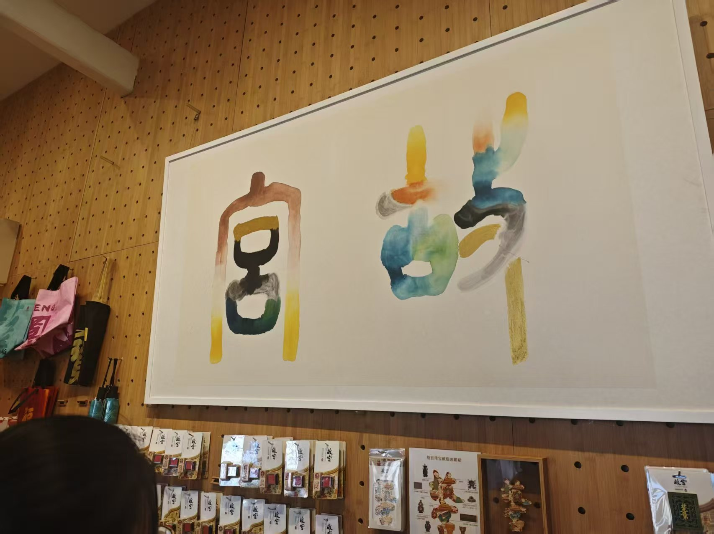
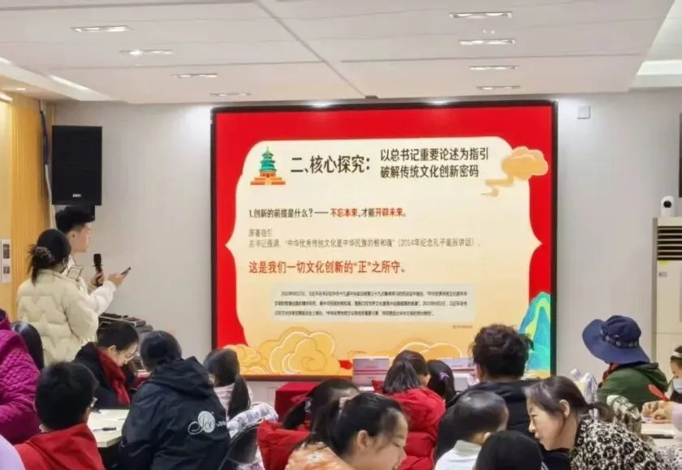
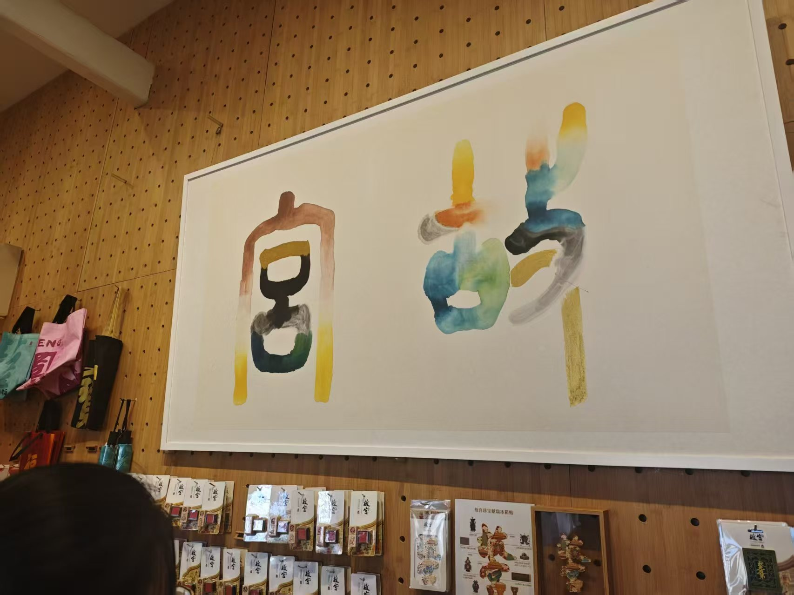
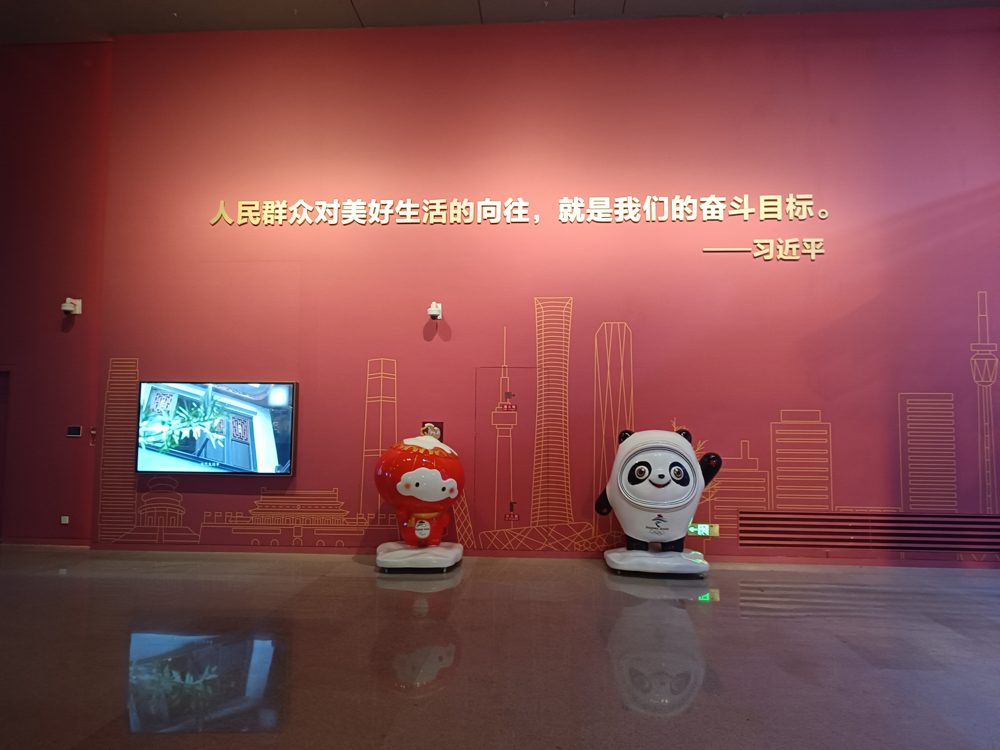
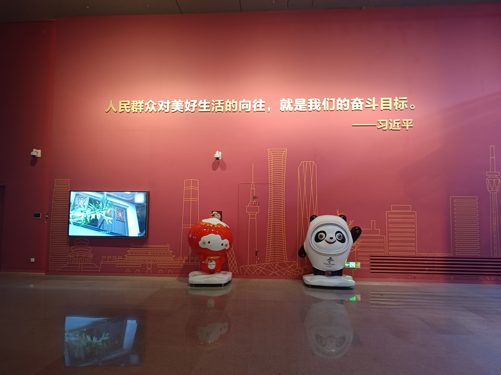
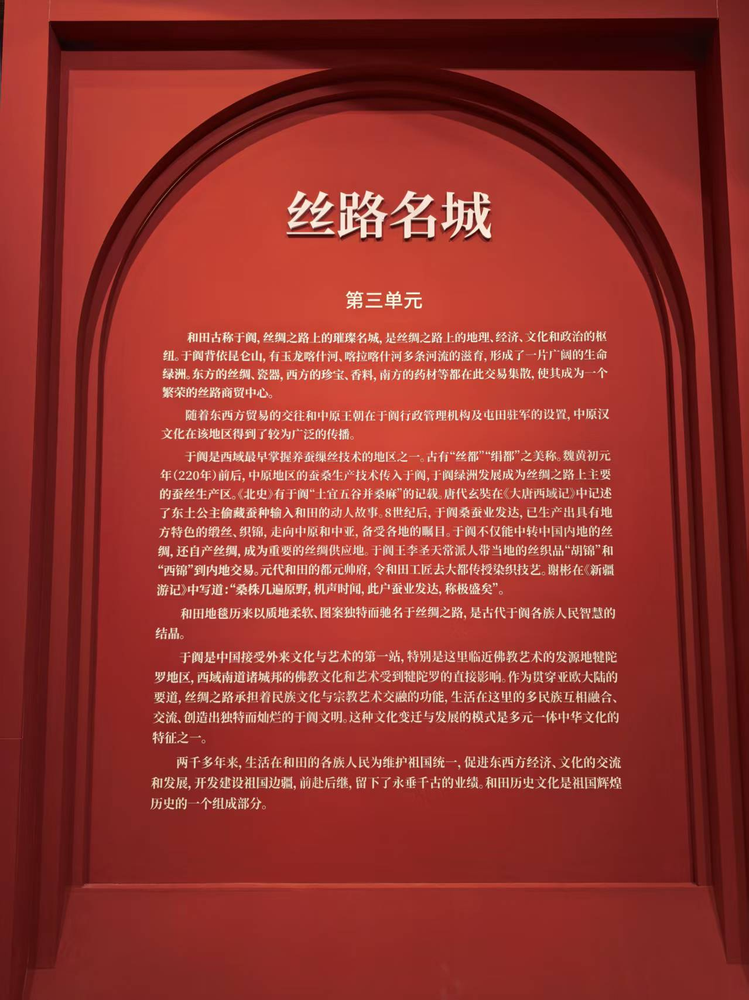
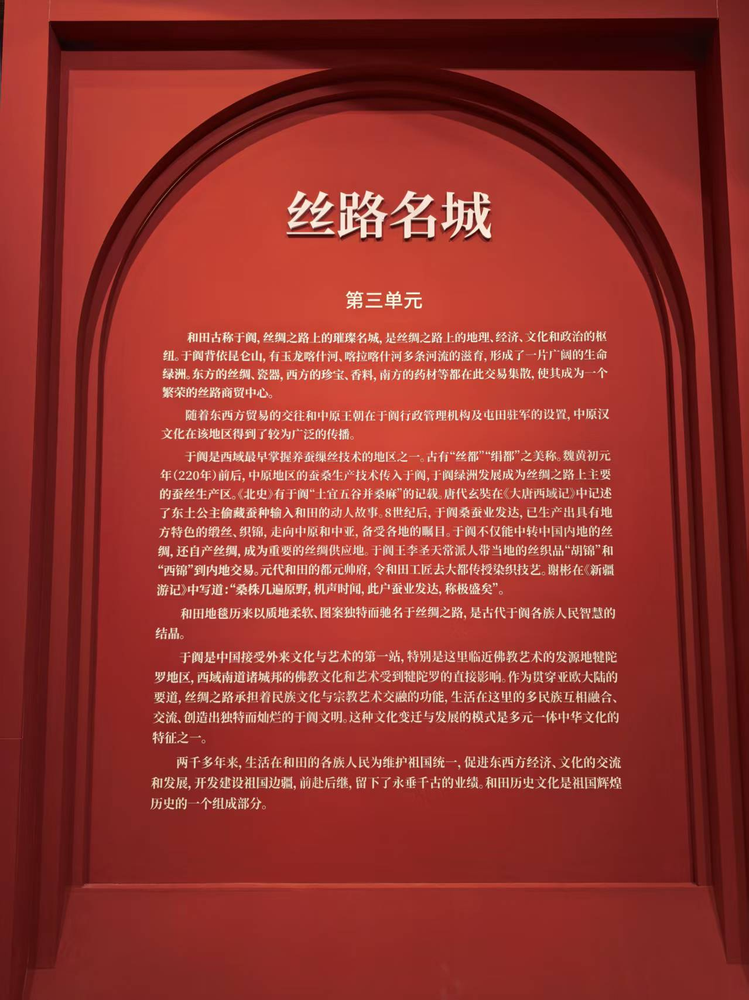

传统文化创新表达与传播调研成果展
通过理论宣讲与社会实践调研相结合，强化理论学习，深化实践运用，坚实做好党的创新理论的传播者、实践者。
探寻传统文化与现代创意、科技及传播媒介的融合之道，挖掘其背后连接历史与当下、沟通中国与世界的精神密码与实践智慧。
赓续文脉，迈步拓新；守正固本，知行合一。
一群热爱传统文化、勇于创新实践的青年学子，因共同的理想汇聚在一起，在探索中成长，在实践中进步。
强化同学们对理论知识的理解，希望大家坦诚交流、互助学习，让调研成果辐射更广泛人群。
在总书记思想引领下，领会传统文化创新传播方式，愿实践团满载而归、硕果飘香！

感受传统文化经创新发展后的精神力量，在亲身实践中体会优秀传统文化的魅力。

深入学习习总书记重要思想，了解文化创新传播意义，发挥青年当代价值！
负责文字撰写与线下调研组织，和大家共同协作，产出高价值社会实践成果。
和优秀同学们一起参与实践活动，超开心～ 关注我们谢谢～
感受习主席思想赋能下传统文化的魅力，探索当代创新性表达，在实践中成长进步！
用镜头和文字记录传统文化“潮”表达，让老祖宗的智慧在新时代发光发热！
深入故宫博物院与中国工艺美术馆，探索传统文化在当代的创新表达与传播，解锁文化“活起来”的密码。
600 年红墙黄瓦，如何从昔日紫禁城变成今日 “顶流” 文化殿堂？我们用脚步、对话和数据，挖出了故宫 “返老还童” 的秘密，更读懂了它作为 “两个结合” 微观样本的深层内涵。
 



故宫 “破圈” 三连招：让文物说话（展示阐释层，解决 “看不懂”）→ 文创融生活（产品转化层，让皇家宝物 “飞入寻常百姓家”）→ 体验做主角（体验参与层，从 “围观” 变 “主演”）。
深层创新密码：一是用辩证思维解决 “保护与开放” 的矛盾（数字故宫、科学分流）；二是实现传统文化与现代精神的 “双向奔赴”（马克思主义群众观注入 + 现代科技赋能，让紫禁城成为人民的博物馆）。

文化创新不能“走形式不走心”，要坚守“社会效益首位”，创新必须建立在扎实的“守正” 基础上，做到 “守正不泥古、创新不离宗”。
一组矛盾数据：65% 的同龄人从未到访中国工艺美术馆，却有 80% 的人对数字敦煌、故宫文创等传统文化创新形式满怀兴趣。～
传统文化如何从 “陌生的宝藏”，变成我们 “愿意奔赴的风景”？我们在工艺美术馆找到了答案。
 

创新的前提： 不忘本来，守正固本 总书记论述：“中华优秀传统文化是中华民族的根和魂。” 调研发现：“尊重和传承文化本体” 成为问卷中传统文化创新的首要前提，从玉雕青瓷、上古神话中，我们读懂了完整的 “中国基因图谱”。
创新的方法： 创转发展，旧邦新命 总书记论述：推动中华优秀传统文化 “创造性转化、创新性发展”。 调研发现：不锈钢雕塑、非遗文创是 “转化”—— 用现代材料承继传统技艺；木雕航天员、冰墩墩是 “发展”—— 用古老技艺刻录新时代精神。
创新的归宿： 服务人民，文化共享 总书记论述：“把人民作为文艺审美的鉴赏家和评判者。” 调研发现：三代人共赏光影民族话剧、孩子抚触荥经砂器，文化走出殿堂，走进日常生活，在人民的土壤中生根长青。
让传统 “活起来”，更要让传统 “新起来”，这是工艺美术馆给出的传统文化创新答案。
.jpg)
 

我们以脚步丈量大地，用眼睛发现案例，用头脑思索路径，通过问卷调研、实地走访、线上分析，系统收集创意文创、国潮品牌、数字文博等典型案例；走入故宫、中国工艺美术馆，深入观察、访谈、分析，探寻传统文化创新融合之道；结合调研成果开展校园宣讲，阐释文化创新背后的时代内涵，让传统文化的新魅力突破校园，触达更广泛的社会群体。
以脚步丈量大地，深入故宫博物院与中国工艺美术馆，观察传统文化在当代的创新表达。
通过线上问卷，收集大众对传统文化创新的认知与期待，为研究提供数据支撑。
与专业人士交流，探讨传统文化与现代创意、科技及传播媒介的融合之道。
系统收集创意文创、国潮品牌、数字文博等典型案例，分析其成功经验与创新路径。
结合调研成果开展校园宣讲，阐释文化创新背后的时代内涵，传播传统文化新魅力。
通过新媒体矩阵，让传统文化的新魅力突破校园，触达更广泛的社会群体。
此次双馆调研，让我们对传统文化的 "根脉" 有了更具体的感知，也让我们明白，青年学子要从文化的 "观察者"，转向 "阐释者" 与 "创造者"。
持续深化对习近平新时代中国特色社会主义思想的学习，主动寻找其与专业学习、社会观察的结合点，让理论与实践相融。
发挥青年熟悉现代语境的优势，用年轻人的语言和喜欢的方式，把传统文化的亮点 "翻译" 给更多人，让传统与现代相拥。
保持清醒的批判性思维，理性看待文化热潮中的成就与问题，通过规范调查研究，为校园、社区文化活动提出建设性 "金点子"，让创新与守正相伴。
调研结束，但思考和实践才刚刚开始。我们将以 "赓脉拓新・守正知行" 为指引，持续探索传统文化创新之路，为传统文化在当代的生生不息，贡献一份青春微光！
文化自信不是喊出来的，而是在一次次触摸、思考和创造中建立起来的！